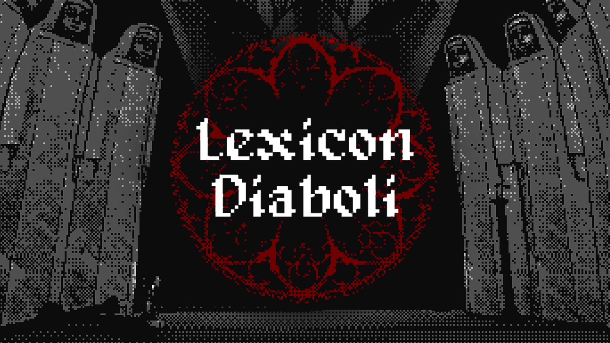

Lexicon Diaboli - Jamaggedon 2026

Lexicon Diaboli
Dithered horror, demonic color language, shaders, audio, and VFX.
Trailer
Lexicon Diaboli is an atmospheric horror game about an exorcist exploring a cursed church after a failed ritual. The player searches for forbidden notes and spell fragments, combines meanings at the altar, and uses them to open sealed paths deeper inside the corrupted cathedral.
My strongest contribution was the visual identity. I worked on the technical art pass that gives the game its occult, high-contrast look, using shaders, fake lighting, and VFX to guide the player while keeping the atmosphere unsettling and readable.
What i Did
Normal + Depth Outline Shader
Built an outline shader using scene normals and depth so silhouettes and important objects stay readable in dark, noisy horror spaces.
Dither Color Quantization Shader
Created the main dither shader that quantizes the palette and uses magenta as a mask to remap selected areas into red highlights for ritual emphasis and visual direction.
Occult VFX Library
Implemented dissolve cards, an energy sphere, water, a portal, fake lights, and other supporting effects to make spells, transitions, and supernatural moments feel stronger.
Devil Voice and Audio Editing
Recorded/dubbed the devil voice and edited audio so the demonic presence matched the distorted visual style.
Project Links
You can download the released Windows build from the itch.io page.
The Development Team
- Julia Fluiters - Programming
- Rodrigo Manzano - Programming
- Eduardo Rico - Programming
- Francisco Blumel - Design
- Alicia Llopis - Art
- Irene Rodriguez - Art
- Nerea Herreros - Music
- Daniel Pascual - Technical Art, Sound